Education
Bachelor of Science
BS (Space Science), University of Punjab (2021-2025)
Subjects: GIS, RS, Meteorology, and Aerospace
Current CGPA: 3.92
Intermediate (F.Sc)
F.Sc (Pre-Engineering), Punjab College Sheikhupura (2018-2020)
Grade: A+ or First Division
Skills
- Digitization using ArcGIS and Google Earth
- Flood Mapping and Analysis (GEE)
- Vector Overlay and Neighborhood Analysis
- Viewshed Analysis (ArcGIS)
- SAR, Optical, and Thermal Image Processing (GEE/ERDAS/SNAP)
- Weather Chart Analysis and Interpretation
- Raster Weighted Overlay Analysis
- Terrain Mapping and Hill Shading
- Mapping of Flood and Precipitation Calculation
Experience
Workshop: Global UGrad-Program (Sponsored by US Govt.)
During this program, I gained expertise in digitization of spatial data using ArcGIS and Google Earth, extraction of data from Google Maps, and creation of Heat Maps.
- Digitization of spatial data using ArcGIS and Google Earth
- Extraction of data from Google Maps and creation of Heat Maps
- Performing GIS Analysis using ArcGIS
- Vector Overlay and Neighborhood Analysis
- Satellite Imagery in RS using ERDAS and applications on GEE
- Study of Flood Disaster Mapping and Precipitation Calculation
- Weather Chart Analysis and Raster Weighted Overlay Analysis
Languages
- English
- Urdu
- Chinese
Hobbies
- Reading
- Learning
- Travelling
Interpolation Maps
Spline
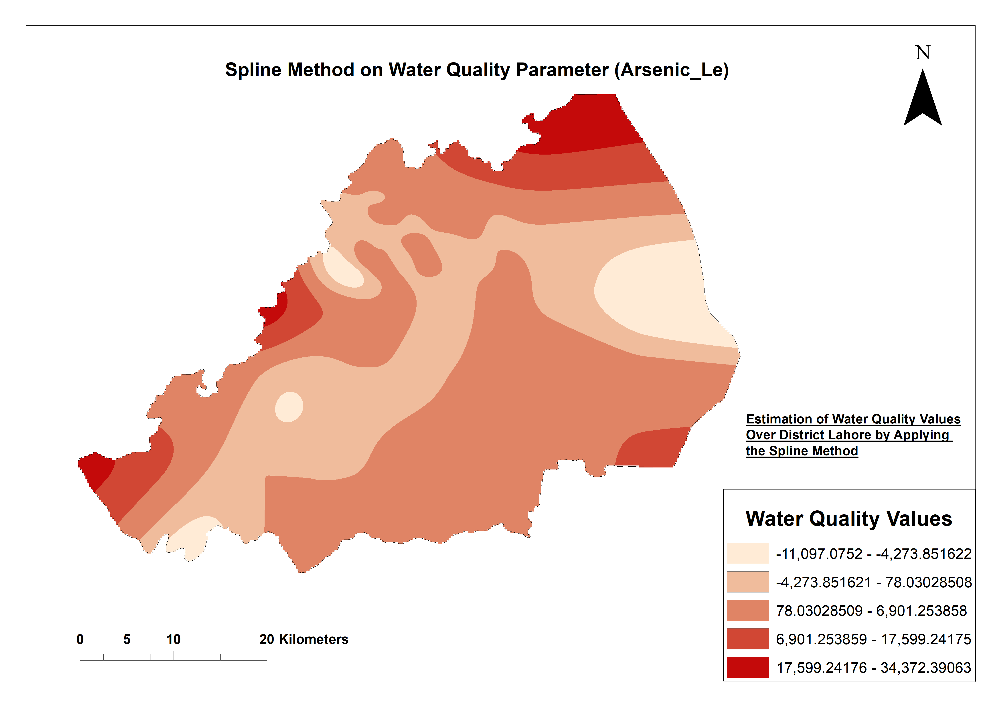

Ordinary Krigging
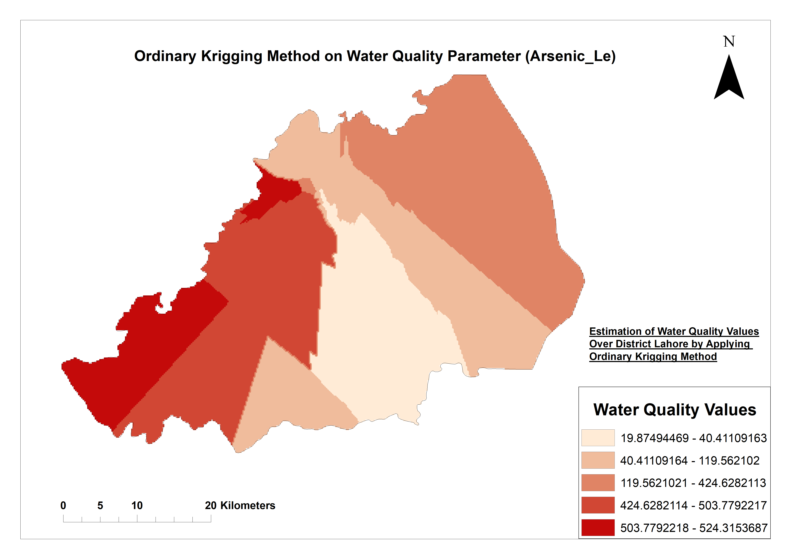
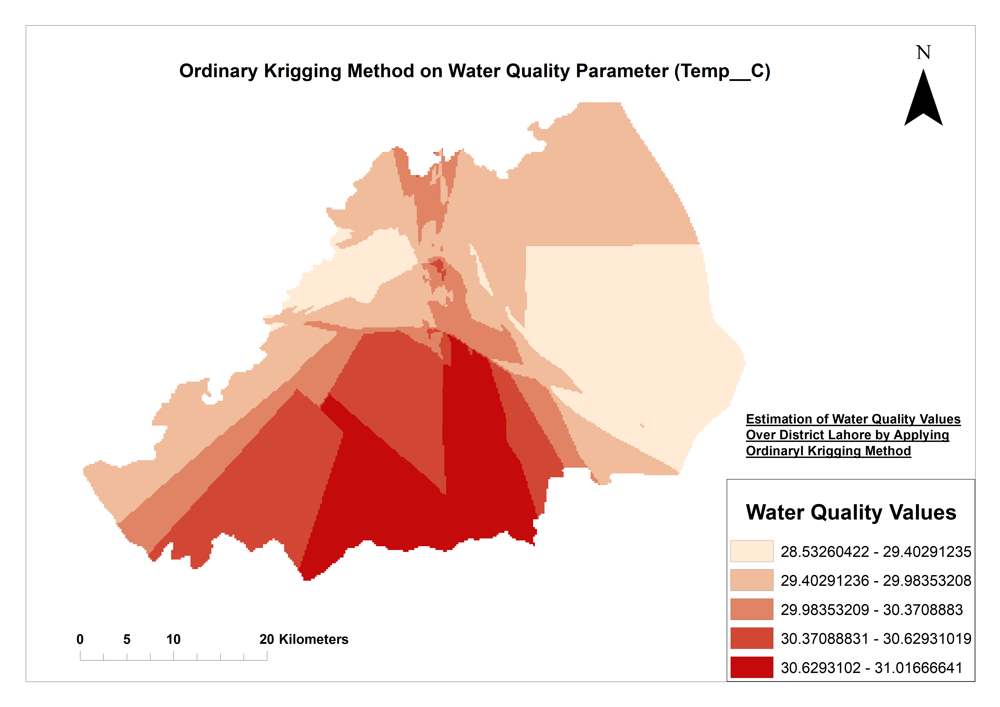
Universal Krigging
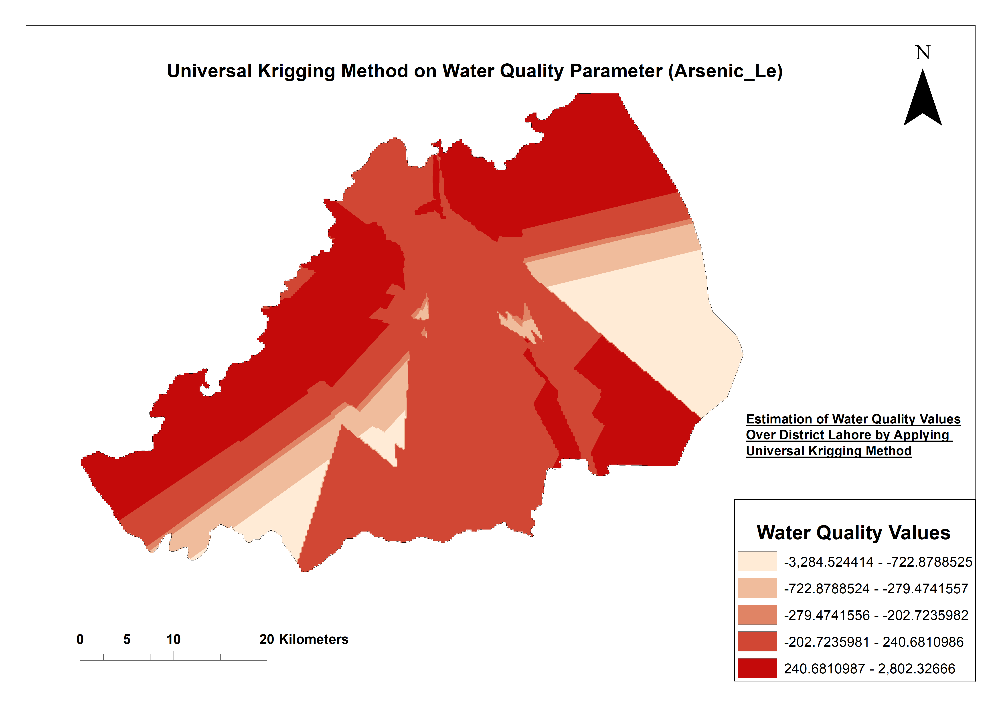
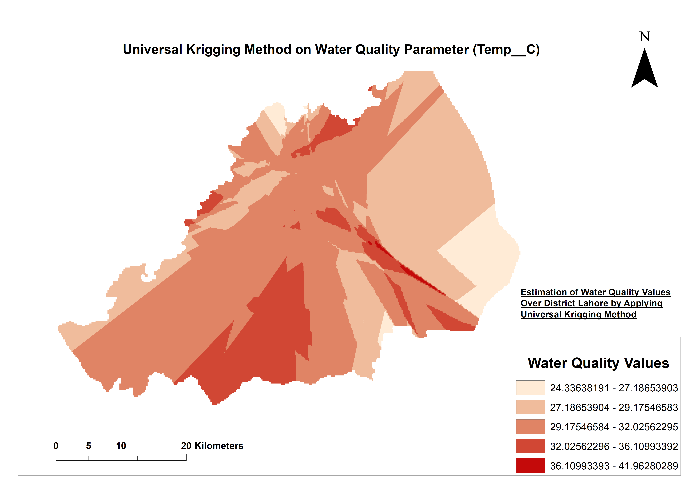
Natural Neighbor
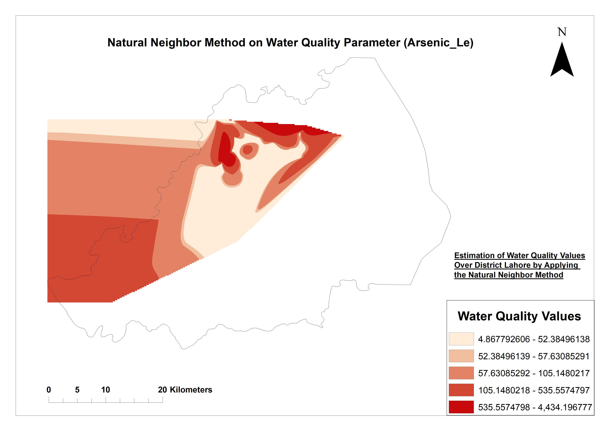
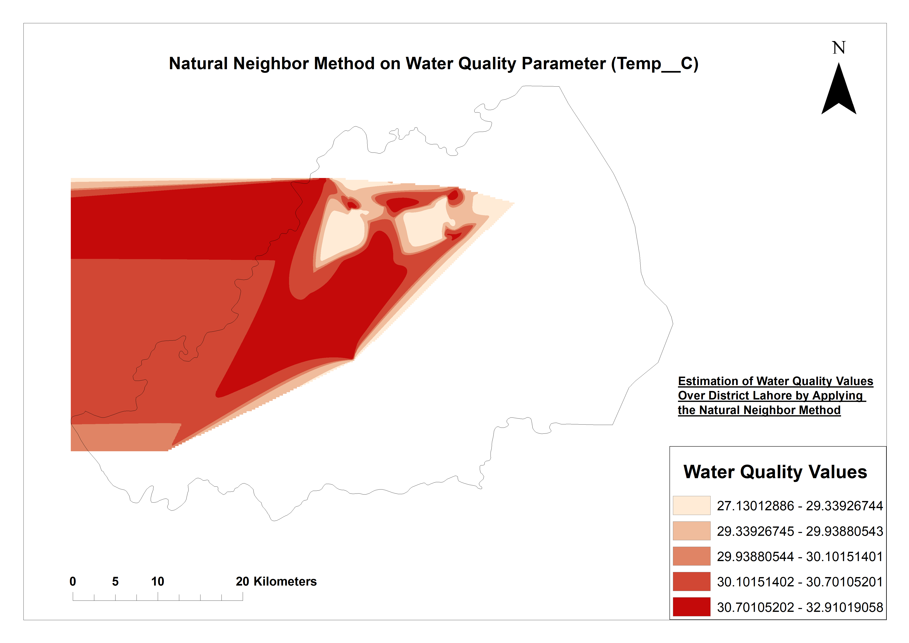
Spline with Barriers
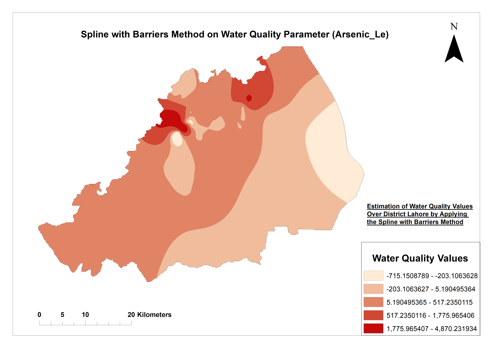
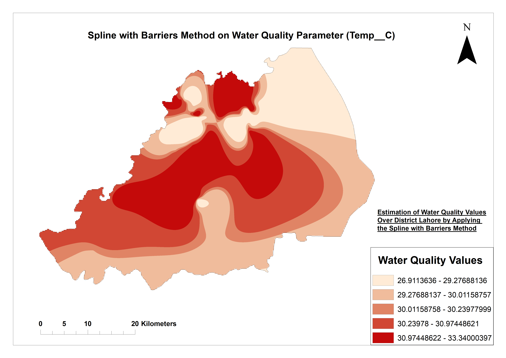
Pansharpening Images
Resolution Merge
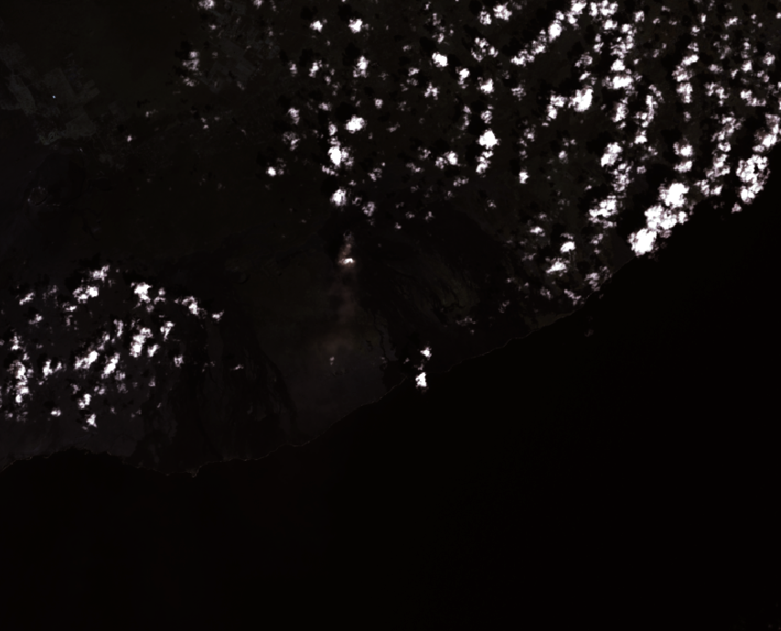
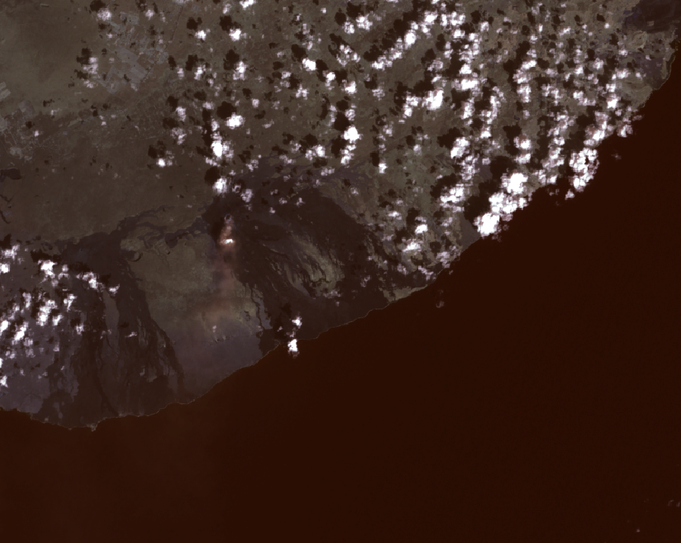
Wavelet Resolution Merge
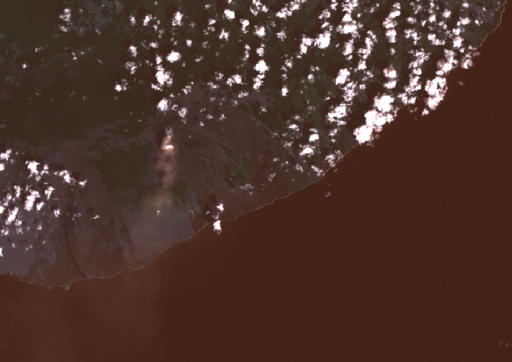
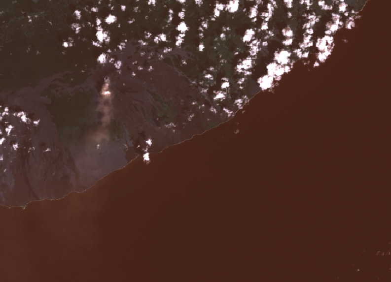
Flood Inundation Heat Maps
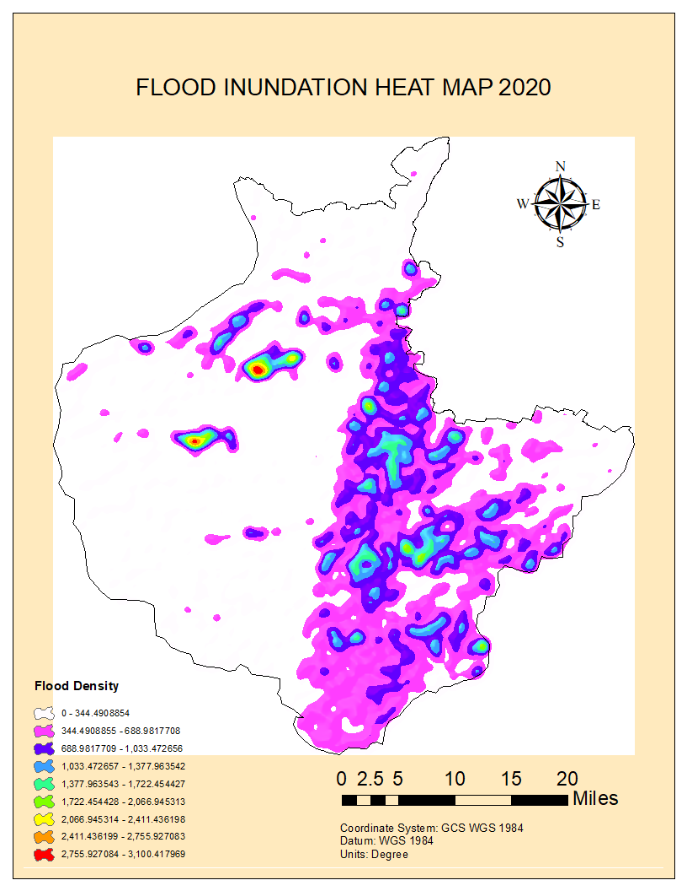
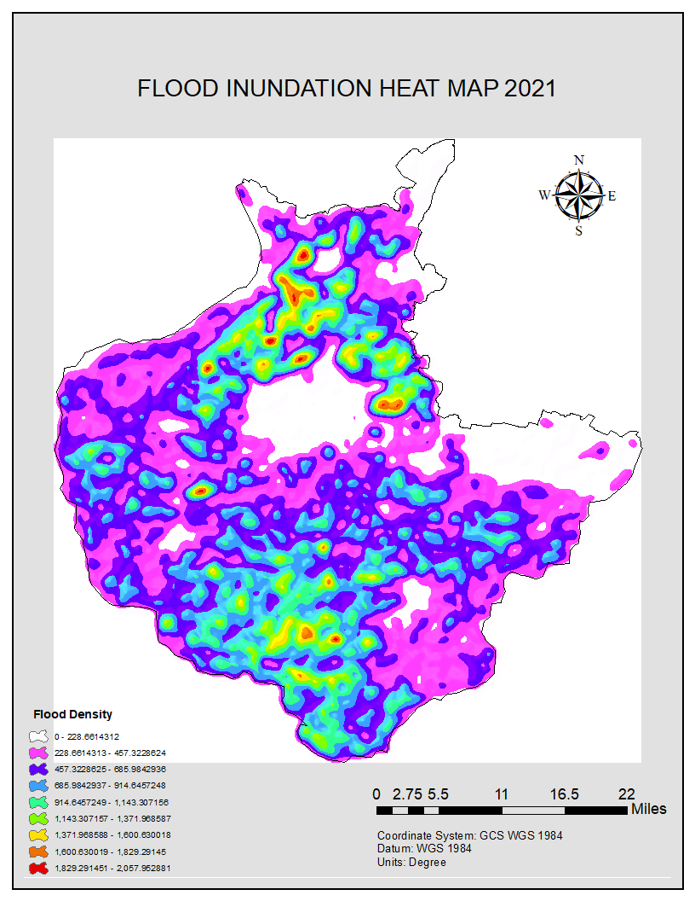